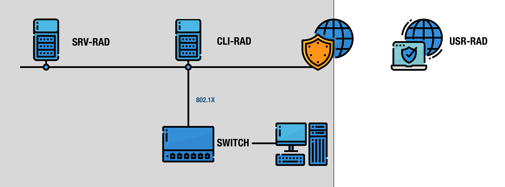
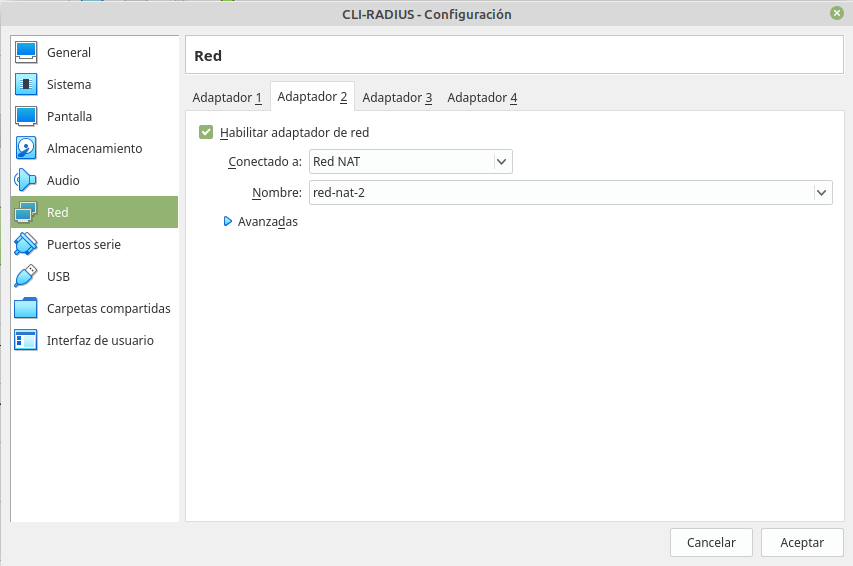
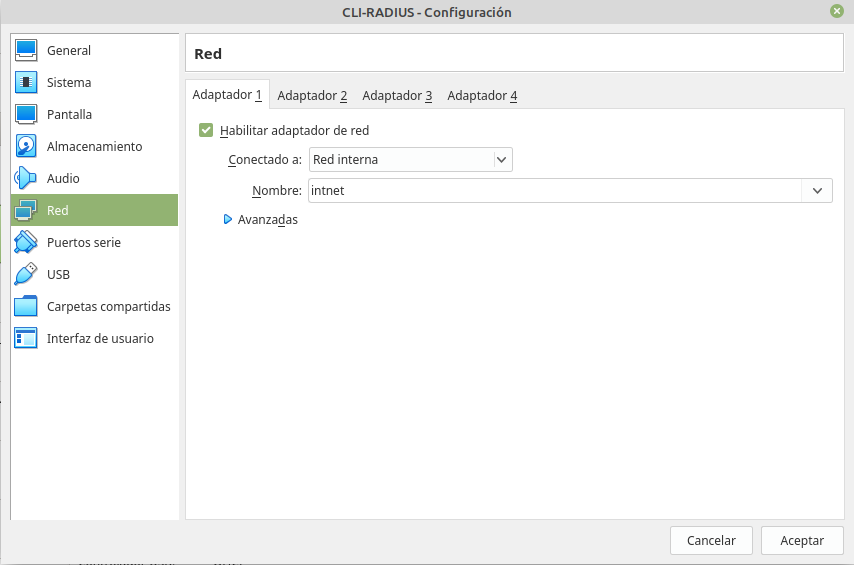
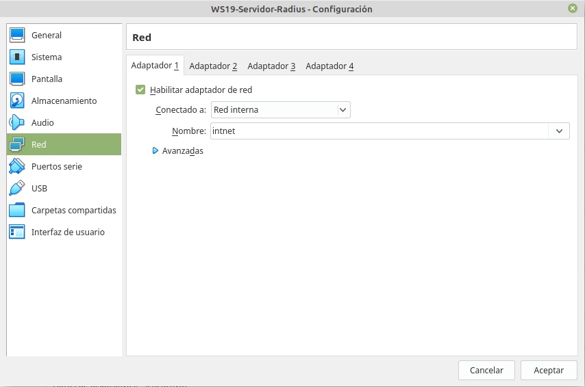
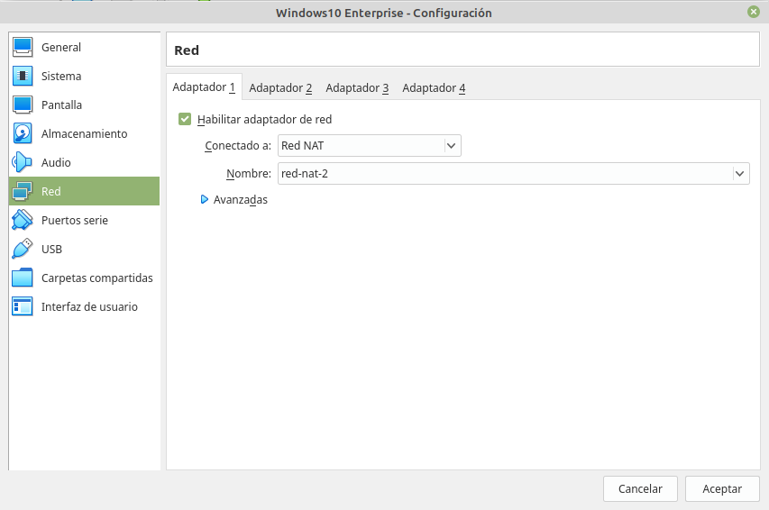

1. Esquema de Instalación
1. Tabla de equipos
En la siguiente tabla, se detalla las configuraciones a realizar en cada uno de los equipos que intervienen.
| Servidor RADIUS | Cliente RADIUS | Cliente | |
| Sistema Operativo | Windows Server 2019 DataCenter | Windows Server 2019 DataCenter | Windows 10 Enterprise |
| Nombre del equipo | srv-radius | cli-radius | User_Radius |
| Adaptador de Red 1 | Solo-Anfitrión | Solo-Anfitrión - Red interna | |
| Adaptador de Red 2 | Red_NAT - Red Externa | Red_NAT | |
| TCP/IP Adaptador de Red 1 |
IP: 192.168.11.254 mask: 255.255.255.0 DNS principal: 127.0.0.1 DNS secundario: - Gateway: 192.168.11.253 |
Interfaz: Interna IP: 192.168.11.253 mask: 255.255.255.0 DNS principal: 192.168.11.254 DNS secundario: - |
IP: dinámica (172.10.0.5) DNS principal: dinámica Gateway: Dinámica |
| TCP/IP Adaptador de Red 2 - Externa |
- |
Interfaz: Externa IP: Dinámica (172.10.0.4) DNS principal: Dinámico Gateway: Dinámico (172.10.0.1) |
- |
| Dominio | DC dominio.local | Integrado en dominio.local | |
| Roles y Características |
Servicios de Dominio de AD DNS DHCP NPS |
Enrutamiento y acceso remoto | |
| Usuarios |
cuenta: radiustest password: password123456. |
||
| Grupos |
radius: Seguridad y Global Miembros: radiustest |
||
|
Secreto compartido con cliente RADIUS |
eeepc20 |
Tabla 1. Datos de los equipos que intervienen.

Figura 1. Esquema de la red.
2. Configuraciones de red en Virtual Box
En el Cliente Radius y servidor VPN, se configuran 2 adaptadores de red, y que son:
- Red_interna: Para la red interna (privada) de la organización.
- Red_nat: Para la red externa (pública) acceso a internet.
Para los equipos que se conectan a la red externa (internet) se crea una red nat con direccionamiento de red público:
#vboxmanage natnetwork add --netname red-nat-2 --network 172.10.0.0/24
Los adaptadores de red del Cliente Radius y servidor VPN son los siguientes:

Figura 2. Adaptador con red nat.

Figura 3. Adaptador con red interna.
El adaptador de red del Servidor Radius es el siguiente:

Figura 4. Adaptador con red interna.
Por último, el adaptador de red del Cliente VPN con autenticación Radius Windows 10 es el siguiente:

Figura 5. Adaptador con red interna.
Obra publicada con Licencia Creative Commons Reconocimiento No comercial Compartir igual 4.0